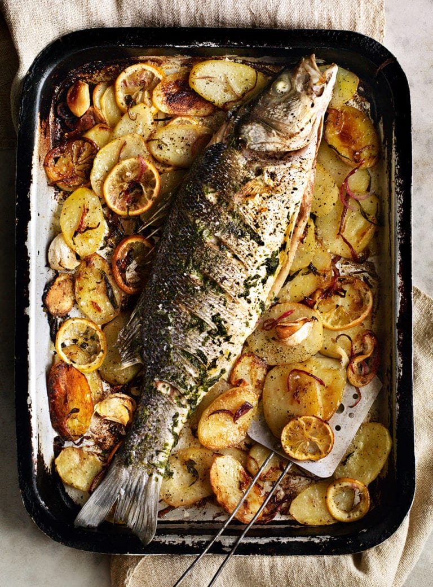

STARTERS
Baked figs with blue cheese and balsamic
- 6 figs
- 6 pieces of porma ham
- 50g roquefort cheese
- 3 tbsp balsamic vinegar glaze
- Splash of dry white wine
- Fresh basil
- Crusty bread

Focaccia
- 500g strong white bread flour
- 10g (1 +1⁄2 tsp) fine sea salt
- 6g fresh yeast or 3g (1 tsp) active dried yeast
- 400g water at room temperature
- 80g olive oil, plus extra to brush

Tomato bruchetta
- ½ small red onion, finely chopped
- 8 medium tomatoes
- 2-3 garlic cloves
- 6-8 leaves of fresh basil
- 30ml balsamic vinegar
- 60-80ml extra virgin olive oil
- 1 loaf crusty bread
MAINS

Pizza Margherita
- 400g tin whole plum tomatoes
- 2 fat garlic cloves, sliced
- 2 tbsp extra-virgin olive oil
- ½ tsp dried oregano
- Handful fresh basil, torn, plus extra leaves to serve

Grilled Fish
- 1kg white potatoes, such as maris piper or king edward
- Bunch fresh tarragon
- 2 lemons, sliced into 3-4mm thick rounds
- 1 red onion, halved and thickly sliced
- 4 garlic cloves, bashed but not peeled
- 2 tbsp extra-virgin olive oil
- Large (1.4kg) line-caught bream

bolognese
- 2 tbsp vegetable oil
- 500g lean beef mince
- 6 garlic cloves, peeled and crushed
- 1 large onion, peeled and finely chopped
- 2 tbsp tomato purée
- 2 x 400g tins chopped plum tomatoes
- 3 tbsp ready-made basil pesto
- 30g mature Cheddar, finely grated
- Freshly cooked spaghetti to serve
DESSERTS
Strawberry Gelato
- 2 tablespoons cornstarch
- 3 cups half-and-half (divided)
- 1 ⅓ cups granulated sugar
- 2 pounds fresh strawberries (about 8 cups hulled and quartered)